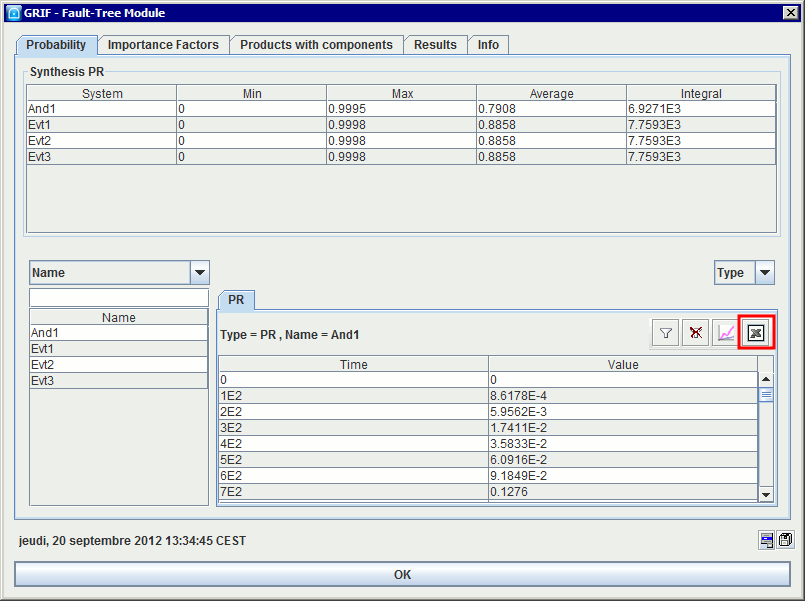
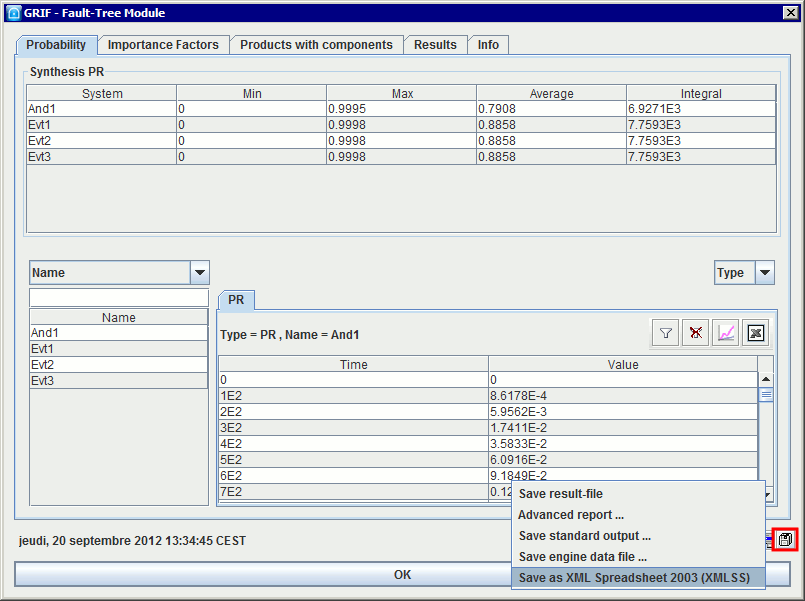

Here is a summary of all the data which can be saved from a same model.
It is obviously possible to save and reload the models which are made. To do this go into menu File - Save or into File - Save as....
The Save as template document menu enables the user to save the document as a template in the Module template folder. New files can then be created using this model and the action New (from template)...
A model can also be saved in RTF format. This allows the saved model to be reloaded in WORD to insert the graphical part of the model in any document. To do this, go into menu File - Save in RTF file....

Note: There is another way to insert model in a report. Select the part of the model, copy it, and paste it in Microsoft WORD or other software.
When the input data for the computation engine is generated, it can be saved. This type of file has the ".don" extension. These files can therefore be modified using a text editor then reloaded to launch computations on them (for example). This action should be made only by advanced user.
Computation results can be saved in different formats :
Export of a table in particular in .csv format:
Export entire set of results:
Save result file : saves the contents of the Results tab (.xml format).
Advanced report : generates reports using style sheets.
Save standard output : saves the contents of the Info tab (.txt format).
Save engine data file : saves the data file sent to the computation engine (.txt format).
Save as XML spreadsheet 2003 (XMLSS) : saves all the results tables in an XML format compatible with Microsoft(r) Excel 2003 and later versions.